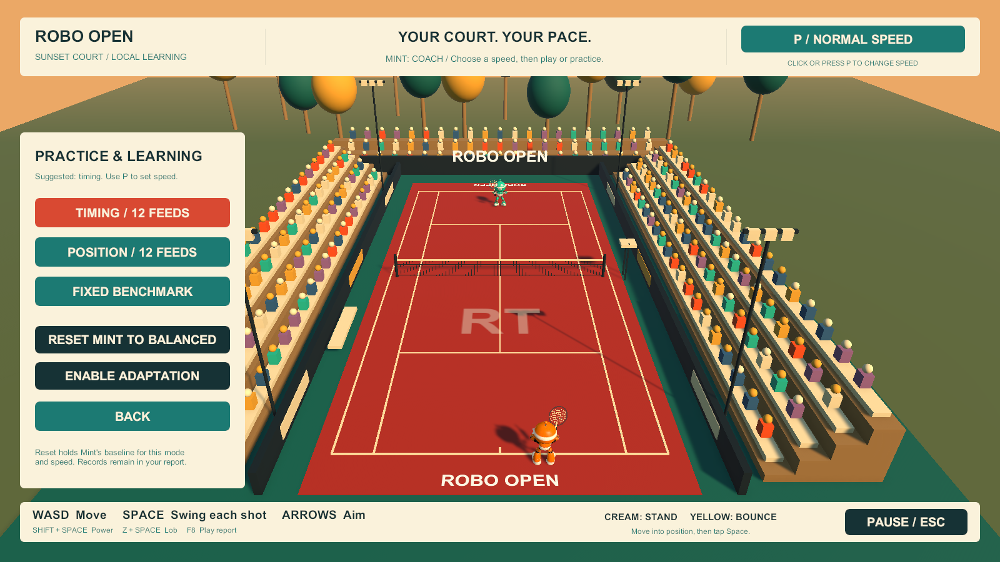

This third chapter covers the local Windows v0.5.0 learning build and v0.5.1 report-viewer repair. “v2” names the development journey; it is not a v2.0 software release. The original and v1 journey files are preserved unchanged.
The project remains an independent reconstruction inspired by Chong-U’s YouTube video. The creator’s project was unavailable. Earlier rounds built the assets, authored tennis motion, improved returns and introduced diagnostics, slow motion and a quieter interface. This round reused that work.
Evidence boundary. Human quotations below come from the conversation. Implementation details were checked against the current local source, build receipts and captured game screens. Some intermediate engineering steps are reconstructed from those artifacts and the preceding session record, rather than a complete public command transcript. Private logs, account details and machine paths are excluded. The public example is synthetic. No evidence presented here establishes that a real player has improved or that a live Mint policy has already earned promotion.
1. The brief: close the learning loop
The human proposed the next direction:
“The logging can surface how the human and the robot players both can improve over time.”
“comprehensive logging, analysis, surfacing feedback to both players, repeat over time. need persistent memory.”
That first request explicitly said “do not implement. just suggest.” The agent therefore inspected the existing design and proposed a delivery order before changing the game. Existing logging explained individual misses and generated fixed recommendations. It did not yet remember interventions across launches or evaluate a changing opponent.
The agreed sequence was persistent profiles and better records; targeted drills with remembered recommendations and measured outcomes; Mint’s bounded adaptation with independent evaluation and rollback; and more advanced machine learning only if it demonstrably helped. The human then authorized that sequence as the next version. The fourth stage stayed an evaluation gate, not an obligation to add a neural network.
One product choice needed clarification: should Mint support Coach and Competitive modes, starting in Coach? The human answered:
“Both; start in Coach mode”
This matters because the players have different objectives. The human needs useful practice and understandable feedback. Competitive Mint needs difficult placements. Coach Mint should seek a productive challenge. A system that always makes the next ball harder could defeat the purpose of practice.
2. What was already there—and what was missing
The starting point was local v0.4.1: two animated robots, four principal tennis strokes, forgiving return planning, a standing-position cue, missed-return reports, normal/half/quarter speed, and a two-bar HUD. These were working foundations, not newly invented features of this round.
The missing connection was between sessions. A report could describe a miss today, but could not reliably answer whether the same issue recurred tomorrow, whether the player followed the suggested drill, or whether results were being compared under equivalent conditions. Raw recording retention also meant that old evidence would eventually expire.
The engineering challenge was therefore more specific than “add AI.” It was to define which observations counted, preserve comparable summaries, connect feedback to a repeatable activity, and constrain changes to Mint so that they could be understood and reversed.
| Starting capability | Addition in this round | Why it matters |
|---|---|---|
| Session-local diagnostics | A persistent local profile and transactional summaries | Useful history survives quitting and raw-log pruning. |
| Sampled misses | Incoming-flight traces for successes and misses | A learner needs evidence about what works as well as what fails. |
| Free-form match practice | Twelve-ball timing, positioning and benchmark drills | Repeated conditions make comparisons less misleading. |
| Fixed Mint shot preferences | Coach/Competitive objectives with a screened policy change | The opponent can adapt without changing its physical abilities. |
| Browser report opening | An in-game report, then a local web viewer | Feedback remains accessible when file-URL opening fails. |
3. The human contribution was direction, observation and acceptance
The agent did most implementation work, but the development was not independent of the human. The interventions changed both scope and verification standards.
| Human intervention, in order | Consequence |
|---|---|
| Proposed logging → analysis → feedback → repetition, with persistent memory; initially requested a plan only | Kept planning separate from implementation and established a measurable loop. |
| Accepted the proposed delivery order as the next version | Authorized the persistence, drills and bounded-adaptation work. |
| Reported that Ctrl+F8 did not display the report, with a browser error screenshot | Made report accessibility part of the feature, rather than an optional polish item. |
| Chose both modes, initially Coach | Defined the default experience and two distinct objectives. |
| Asked to start the game | Moved the work from automated checks into actual human use. |
Reported “Open Full HTML resulted in this,” with another ERR_FILE_NOT_FOUND screenshot |
Disproved the adequacy of the first external-viewer repair and triggered v0.5.1. |
| Requested this journey, a public Play Report and the main-menu screenshot | Required an inspectable, privacy-safe explanation and showcase. |
The agent chose the storage binding, data structures, evidence exclusions, drill parameters, policy thresholds, report transport and test fixtures. These were implementation judgments within the authorized scope, not additional user requirements. No human manually authored new animation frames or meshes in this round.
The earlier human finding that quarter speed helped remained central. It motivated retaining practice speed everywhere and treating speed as part of the evidence context. It did not justify claiming normal-speed improvement from slow-motion success.
4. Memory: preserve meaning, not just more files
LearningStore.cs uses Windows’ system SQLite library, winsqlite3, through a native C# binding. This avoids a new package download or cloud account. The tradeoff is explicit: this persistence layer is Windows-specific. A future macOS, Linux or browser build would need another binding.
The database lives in the game’s local application-data Learning folder. The first profile receives a random local identifier. It stores settings, session summaries, comparable aggregates, action observations, drill attempts, policy records and calibration state. The implementation uses a small keyed JSON-record table inside SQLite; it is not a large relational analytics warehouse.
The important unit of durability is a transaction. A session’s processed-shot checkpoint and the corresponding aggregates are committed together. Opening the report repeatedly or retrying a save must not count the same return twice. Storage has a schema version, and an unknown schema is not silently overwritten. Full synchronization is requested for durable commits; SQL strings are escaped, and the native boundary supports Unicode paths.
Temporary database contention receives bounded retry handling. A pending observation queue is capped at 1,024 items. If that queue overflows or storage becomes unavailable, gameplay continues and the report marks the memory as incomplete. Missing data must not masquerade as improvement. This is a deliberate separation between being able to play and being able to trust an analysis.
Persistent summaries sit outside raw-session retention. Raw traces keep the existing limit of twenty sessions, approximately 100 MiB overall, and 8 MiB per stream. The report displays the latest sixty session summaries and forty drill records, while older database records and lifetime aggregates remain stored. The policy learner uses a shorter, recent evidence window of its own.
Old v0.4 logs are preserved but not silently imported into the new learner. They lack the new mode, task and policy context needed for honest comparisons. That is a migration decision: preserving a file does not make it valid training data.
5. Better logging begins with the clock
An earlier missed-shot ring held three real seconds. At quarter speed, that contains only 0.75 game seconds. The very practice setting that helped the human could therefore remove much of the approach from the diagnostic record.
The revised recorder follows an incoming flight from approach to outcome, including successful returns. It samples every 0.1 game seconds, capped at 240 samples plus the outcome, with an explicit truncation indicator. This preserves comparable game motion across speed settings. It remains a sampled trace, not a deterministic replay of every physics update.
Records now include mode, task, practice speed, policy, chosen action, that action’s probability, the full three-action probability distribution and the match seed. Existing evidence includes inputs, reach checks, trajectories and animation state. Human matches use a recorded random seed; automated scenarios keep a fixed seed, and drills use deterministic feeds.
Recording the action probability is more than bookkeeping. Once an opponent changes its choices, the stream of encountered balls changes too. A return rate can improve because the player improves, because the opponent feeds easier balls, or because the mix of balls shifts. Keeping the policy context exposes that confounder. This implementation does not yet perform a general off-policy causal analysis.
The recorder excludes mixed-speed exchanges, focus interruptions, engine/contact failures, scripted errors and unfinished exchanges from skill-rate estimates. A CPU decision failure should not become evidence that the human needs a timing drill. Conversely, a miss with no observed contact window remains ambiguous: positioning and ball difficulty may both explain it. No logged key press is not proof of a deliberate decision not to swing.
The learning aggregates track both players. Mint’s adaptation objective, however, specifically uses eligible human outcomes after Mint’s bounded action choices. “Both players have feedback” and “both players share one learning algorithm” are different claims; only the first describes this design.
6. Comparable feedback, with uncertainty visible
LearningModel.cs and LearningReport.cs group observations by rules version, mode, speed, task, Mint policy and player. The rules identifier is learning-rules-1. Quarter-speed timing practice is not pooled with normal-speed competitive matches. Results under a new opponent policy are not treated as the same conditions as balanced play.
Reports show counts, return rates and approximate 95% Wilson intervals. A small observed difference should not become a confident improvement claim. The intervals also have a limitation: shots in one session can be correlated, so the usual independent-observation assumption may understate uncertainty.
Guidance is deliberately focused. A cause needs at least three observations before it becomes a priority to investigate. The system remembers the recommendation associated with a drill attempt, but it does not infer a biomechanical diagnosis or pretend to know the player’s intent. Recommendations are generated by explicit rules, not an LLM.
Example, not a player result: eight returns from twelve feeds is useful feedback, but it is a small sample. If the next attempt returns nine, that one-contact change alone does not show that the drill worked. A more credible evaluation repeats the same benchmark at the same speed and keeps the conditions visible over several sessions.
The distinction is practical: a coach can say “timing misses recur; try this exercise” while remaining honest that the recorded association does not prove the cause.
7. Drills turn a recommendation into an action
The new Practice & Learning entry leads to three twelve-ball activities. They reuse the existing scene, return rules and motion rather than introducing a second tennis simulation.
| Drill | Feed design | Intended use |
|---|---|---|
| Timing | Repeated central feed | Practice releasing and tapping the swing input at the right moment. |
| Position | Alternating left/right targets, 2.6 court units from center | Practice getting behind the bounce before swinging. |
| Fixed Benchmark | A repeated twelve-ball lateral/depth sequence | Compare attempts under fixed conditions, independent of Mint’s learned preferences. |
The ball-machine origin is (0, 1.35, 8) in the game’s court coordinates, with a 1.55-game-second flight. Each feed resets the human player to (0, 0, -9.1), followed by a 1.2-game-second preparation interval. The benchmark cycles lateral targets −2.6, 0, 2.6, 2.6, 0, −2.6 and depths −7.4, −8.3, −9.1. These are authored, repeatable parameters, not learned movement.
The recorded outcome is accepted racket contact on the incoming ball. It is not a winning outgoing shot. Resetting the player makes isolated timing and positioning easier to compare, but means the drills do not yet measure recovery between consecutive shots. Aiming quality and tactical selection remain future work.
Each attempt stores the suggested drill, the chosen drill, speed, completed feeds, accepted returns, eligible results and completion state. Leaving or restarting preserves an interrupted attempt. Changing speed anywhere during the block marks it mixed and excludes it from comparable completed attempts. Practice speed still works; its effect is made explicit.
A visual/test pass caught a small but consequential flow error: Play Again after a completed drill initially started a match. It was corrected to repeat the same drill. A measured practice loop depends on mundane controls like this; accurate statistics cannot compensate for sending the player into the wrong activity.

8. Mint adapts its choices within fixed abilities
The first learner changes the probabilities of three existing rally actions: left placement, right placement and a central lob. Balanced Mint starts with equal probabilities. A promoted preference receives 60%, with 20% for each other action. Forced smashes and serves are outside this learner.
The physical rules stay fixed: movement speed, reach, contact tolerance and ball physics do not increase when Mint learns. The CPU still uses its existing 5-unit-per-second movement and 1.58-unit reach, against the human’s 1.85-unit reach. Adaptation changes what ball Mint chooses, not whether it can secretly reach farther.
Coach selects toward a declared 70% human return-rate target. Competitive selects toward lower human return completion. The former target is a design heuristic, not an empirically established ideal for this player. The latter is a proxy for difficult placement, not proof of better match-winning strategy.
Illustration / this does not train Mint
Same abilities. A different mix of shots.
Left33.3%
Right33.3%
Lob33.3%
Equal probabilities while evidence is insufficient. All three choices remain possible.
Hypothetical accepted preferences, not measured player data. Coach would favor the action supported as nearer its 70% return target; Competitive would favor the harder supported action. Promotion requires separate training and evaluation sessions. Every fourth match after promotion uses balanced calibration.
Promotion has several gates. Only eligible observations from balanced human matches are used. A deterministic hash assigns complete sessions to training or evaluation partitions. Keeping entire sessions together reduces leakage between selection and evaluation. The latest twenty-four balanced sessions for the selected mode and speed are considered.
Every action needs at least twenty-four eligible outcomes in each partition, with observations from at least three sessions per partition. Even before other exclusions, this implies at least 144 eligible action outcomes across the two partitions. Real play may need considerably more because action counts and session partitions will not be perfectly balanced.
Training selects the candidate action. Held-out evaluation can reject that candidate; it cannot search for a different winner. Approximate intervals and a three-percentage-point margin must support the preference. Automated ballistic checks also verify the candidate placements against court constraints.
Only then can a policy be saved and applied at a match boundary. It remains fixed during that match. Sparse initial data leaves Mint balanced. The demonstration of a promotion in synthetic tests does not mean the human profile has accumulated enough evidence to trigger one.
An old scripted CPU overhit remains available to the automated validation scenario, but is removed from human Coach and Competitive play. Intentional fixture errors would otherwise contaminate the very evidence used to judge performance.
9. Adaptation needs fresh evidence and an exit
A learner that changes the balls it serves also changes the evidence it collects. After promotion, every fourth adapted match is explicitly labeled CALIBRATION and uses balanced choices. Other matches retain the saved learned policy. This periodically restores a comparable source of fresh observations.
The recent balanced-session window is reevaluated at match boundaries. Sufficiently sampled contradictory evidence can replace the favored action or restore balanced play. Sparse evidence after a promotion can retain the saved policy until there is enough information to judge it; this is not continuous regression detection.
The human also has direct control. Reset Mint to Balanced restores and holds the baseline for the selected mode and speed. Enable Adaptation allows evidence to be evaluated again for a following match. Policy history retains the reason and evidence counts behind changes. Resetting Mint does not erase the player’s memory.
The mechanism is bounded statistical adaptation. It is not reinforcement learning over long match sequences, learned animation or human-like perception. Mint still reads exact game state. These boundaries are not cosmetic: an opponent can produce more varied placements while still lacking the uncertainty and reaction delays of a human player.
10. Feedback belongs beside the court
The human’s earlier complaint about seven distracting cards shaped this round. Learning did not add a new central dashboard over the rally. The welcome panel gains mode selection, Practice & Learning, and Open Play Report. The practice submenu holds the drills and adaptation controls. Match play keeps the two slim edge bars.
F8 and Ctrl+F8 now reach the same in-game report handler. Active play pauses; a panel in the left margin shows You/Mint counts, remembered practice guidance and the current policy. Back to Court returns to play. Open Full HTML is an optional deeper view.
This was also the first response to the report-access bug. A browser should not be required for immediate feedback. However, supplying an in-game fallback did not excuse a broken full-report button. The second human screenshot forced a separate end-to-end repair.
11. The report existed, but the browser still failed
The user’s two screenshots showed the same browser failure:
“Your file couldn’t be accessed”
ERR_FILE_NOT_FOUND
Inspection found a nonempty report at the expected path. The first repair wrote reports atomically, kept a stable Diagnostics/Reports/latest.html, and asked Windows to open the actual filename through its file association. Temporary-file writing, a durable flush and replacement protect against opening a partially written document. They do not prove the browser can display it.
That distinction became concrete when Open Full HTML failed again. The latest saved report existed and contained 20,462 bytes. File permissions and the default HTML association were inspected. No conclusive underlying explanation for this machine’s file-URL failure was established. It would be inaccurate to relabel it as a proven missing-file, extension-permission or encoding bug.
Browser tooling also declined access to the private report file URL. The agent did not route that same private report through another automation surface to evade the refusal. Browser verification used a separately generated synthetic fixture instead. The runtime fix itself was authorized by the reported failure; it did not require changing browser security settings.
The v0.5.1 solution changes the transport. ReportServer.cs serves one generated HTML snapshot over loopback HTTP, using 127.0.0.1, an automatically chosen port and a random route. The browser receives a normal local web page. The saved export remains available on disk.
The server is intentionally narrow: GET/HEAD only, exact host and route checks, no directory listing, no arbitrary file reads, no write endpoint, no CORS grant, and bounded request headers/timeouts. It includes no-store and restrictive response headers. It is a temporary viewer, not a web administration service or an upload endpoint.
The game owns that server’s lifetime. The URL stops accepting requests when the game closes, so the UI asks the user to keep it running while viewing or refreshing. OPEN_PLAY_REPORT.cmd has a saved-report helper that reuses the same server source and expires after thirty minutes. Restarting that helper opens a fresh local viewer.
The exact original browser cause remains unresolved; the replacement viewing path was verified. This is a useful engineering distinction: a reliable remedy can be established without pretending that every underlying platform failure has been explained.
12. A public report you can inspect
The example below was produced by the v0.5.1 report renderer from explicitly synthetic observations. It includes practice-memory context, diagnostics for both players and a playable sampled court replay. The invented counts—eight human returns and four misses, ten Mint returns and two misses—are display/test fixtures, not a published assessment of the human.
It deliberately has no promoted Mint policy or claimed long-term progress. Those require evidence the fixture does not contain. The report’s “gather more observations” state is part of the feature, not missing data that should be filled with invented success.
Interactive public example / synthetic observations
Open the report in a full tab. Scroll inside the report to try its court replay.
Open the full interactive example. Choose Play / pause in the missed-return replay section. This is an HTML analysis and replay viewer, not a browser port of the tennis game. It does not read the visitor’s game files or update any profile.
GitHub’s README presents a linked report preview; the interactive HTML runs on GitHub Pages. The new journey also embeds that public example. Only the synthetic document is published. The private report and local database stay on the computer.
The documentation pass used the same /dev-journey workflow as the earlier rounds. A new Python/Markdown renderer reads the earlier chapter’s style without executing its generator or rewriting its files. The wrapper grew from two tabs to three, and its formerly two-tab keyboard logic became a general wraparound sequence. A fresh isolated Unity run supplied the main-menu and practice-menu images. The synthetic report received a prominent public-example banner; its original report content and replay data stayed intact.
The older browser connection was unavailable during previewing. The active browser connection worked; an attempted screenshot call from the older API was corrected to the current screenshot API. The final image captures page content only, without the browser’s account or address chrome. These were documentation-tool issues, separate from the repaired game viewer. A temporary preview directory contained only allowlisted public artifacts. Hash checks protect the earlier chapters, and GitHub CLI publication is limited to the documentation and showcase files.
13. Which tools did what
| Tool or component | Actual role this round | Boundary |
|---|---|---|
| Codex / GPT-6 Astra | Inspected source, proposed the delivery sequence, authored C# and documentation, ran checks, investigated failures and prepared publication | Human observations set priorities; generated explanations were checked against artifacts. |
| Unity 6000.5.7f1 | Runtime integration, menu/report panels, drills, input simulation, builds and real game screenshots | UI tests do not prove human enjoyment or skill improvement. |
| C# and Windows SQLite | Comparable records, transactions, statistics, policy gates, local persistence and the report viewer | No neural training, cloud backend or LLM coaching was added. |
| Blender | Existing rig, skinning and authored strokes were reused in the game | Blender was not rerun for these learning/report changes. No new joints or motion clips were authored. |
| Meshy | Earlier generated robot assets remained in use | No requests and no additional Meshy credits in this round. |
| PowerShell and Python | Build/test orchestration, cross-process SQLite checks, saved-report helper, documentation rendering and publication checks | Test outputs remain separate from the human profile. |
| Chrome and browser automation | Verified the synthetic full report, actual game-initiated opening and replay playback | Private file-URL access was not bypassed. |
| Git, GitHub CLI and Pages | Versioned and published this documentation/showcase | A documentation update does not publish a new Windows release. |
The third-party tools matter less here than their responsibilities. Blender represents motion; Unity runs the game; SQLite preserves observations; explicit C# rules evaluate them. Calling all four “AI” would obscure where behavior actually comes from.
No paid generation was required. Additional Meshy usage was zero. Exact model token cost and total agent wall time were not measured for this chapter, so no precise cost or autonomy percentage is claimed.
14. Verification, failures and what the numbers mean
The v0.5.0 receipt records 156 checks: thirty existing rules checks, fifty-eight learning/storage checks and sixty-eight standalone input/UI checks. A separate one-minute rally run achieved an eighteen-shot best rally, with fourteen human-side automated returns and sixteen Mint returns. This is a regression scenario, not a human benchmark.
The learning checks exercised real Windows SQLite persistence and reopening, duplicate protection, temporary database contention, evidence exclusions, independent rejection, promotion, calibration, rollback and Unicode/atomic file handling. They also checked twenty-seven target/ballistic constraints. A separate Python SQLite read after the Unity player exited confirmed that persistence was on disk, not merely in a surviving C# object.
Standalone checks injected real Unity input events for F8/Ctrl+F8 and the menu/drill flows. The twelve-return drill-completion fixture repositions the ball to exercise the full flow; it does not prove twelve naturally delivered feeds were played successfully. A natural feed launch was separately checked. Keeping that distinction prevents a convenient fixture from becoming an exaggerated gameplay claim.
The v0.5.1 repair added fourteen HTTP checks and brought standalone input/UI checks to seventy. Its build reran the thirty rules and fifty-eight learning checks. The HTTP checks covered byte-correct UTF-8, GET/HEAD behavior, route/host/method rejection, no directory access, content updates and shutdown. Chrome verification established that the game’s own launch function opened the synthetic report and that replay time advanced from 0.00 to 0.60 game seconds.
Both recorded Windows builds completed with zero errors and two warnings. The warnings concerned an intentionally runtime-only learning field and an optional Unity pipeline component; the receipt does not hide them. The report fix changed transport, not tennis physics or learning thresholds.
For this documentation pass, a fresh isolated v0.5.1 standalone run captured the current welcome and practice panels. Its synthetic input does not train the human profile. Publication checks cover links, preserved earlier chapters, privacy-safe text, screenshot content, report playback and the three-tab journey navigation.
| Failure or near miss | Response | Residual limit |
|---|---|---|
| Three real seconds of trace shrink at quarter speed | Sample full flights in game time, including successes | Traces are capped and sampled, not deterministic replays. |
| Repeated saves could inflate progress | Commit checkpoint and aggregates together; test idempotency | Storage can still become unavailable, and is surfaced as incomplete. |
| Opponent adaptation changes the evidence distribution | Separate contexts, balanced training, held-out sessions and periodic calibration | No general causal estimate or continuous regression detector. |
| “Play Again” left the drill loop | Repeat the chosen drill | Drill coverage still differs from an unscripted human session. |
| Saved HTML and successful write checks did not imply visible browser success | Verify the full launch/render/replay chain using local HTTP | Original file-URL cause remains unestablished. |
| Synthetic tests could pollute practice memory or public claims | Isolate test profiles and label the public example | Functional passing tests are not measured human improvement. |
Evidence: v0.5 learning receipt, learning checks, rally receipt, v0.5.1 report repair, HTTP checks, and this showcase’s verification.
15. Unknown unknowns made explicit
The unit of comparison is a hidden product decision. “Return rate” sounds universal until speed, task and opponent change. The current response is strict context separation. A future progression view will need a deliberate way to show advancement between contexts without pooling incompatible results.
An adaptive coach can make the chart look better without making the person better. Easier feeds can increase success. The fixed benchmark is the beginning of an independent measuring stick. Repeated benchmarks and stable conditions matter more than a rising aggregate percentage.
The absence of an input is an observation, not an intention. Focus loss, uncertainty about controls and reaching the wrong marker can resemble poor timing in a log. The system excludes known interruptions and phrases ambiguous causes as investigations. It does not infer motivation or cognitive state.
Small samples and repeated shots can fool evaluation. Twelve feeds provide immediate feedback but weak statistical evidence. Training/evaluation separation by session, intervals and promotion thresholds reduce overinterpretation. They do not eliminate correlation or prove causality.
Persistent memory introduces operational behavior. Schema changes, duplicate writes, disk contention and retention now affect trust. Transactions, explicit incompleteness, isolated tests and a documented backup path address those concerns. Cross-device synchronization and an in-game profile-management screen are not delivered.
A benchmark measures only what it asks the player to do. Resetting before each feed makes comparisons cleaner but removes recovery play. Accepted return contact does not measure placement quality. Future drills should add those dimensions explicitly rather than silently changing the meaning of old scores.
“Self-learning” can imply abilities that do not exist. Mint adapts three action probabilities under fixed physical rules. It still has exact state access; the robot’s animation is authored. Human-like anticipation, reaction delay, tactical planning and learned motion are separate development problems.
A browser launch is not a browser render. The first repair passed storage checks and still failed for the user. Verification now crosses the boundary from game to operating system to browser to interactive replay. The public showcase similarly needs a live Pages check, not merely a generated file.
16. What is delivered, and what should come next
The local Windows game has persistent practice memory, richer flight records, comparable feedback, three repeatable drills, Coach and Competitive modes, bounded policy promotion and rollback, in-game reports and the repaired full HTML viewer. The new documentation publishes the story and a synthetic demonstration. The existing Windows release remains separate; no new game archive is implied by these Pages updates.
The next useful experiment is small and concrete: repeat the same fixed benchmark at the same speed across several sessions, record the suggested drill and chosen practice between attempts, and examine both the return counts and recurring causes. Improvement claims should wait for sustained comparable observations. Mint should remain balanced until its explicit evidence gates are met.
Only after that evidence is useful should advanced machine learning be considered. Candidate questions include predicting an individual’s timing window, estimating placement difficulty under sparse data, or adding realistic perception delays. Each deserves its own baseline, evaluation and rollback plan. A neural network is an option for a demonstrated gap, not the completion criterion for this version.
The human supplied the objective and the failures that mattered. The agent converted them into implementation, evidence and an inspectable account. The most consequential progress was making feedback persistent—and making the system admit when the evidence is insufficient.